Filters Workflow (/filters)¶
Primary workflow route: /filters.
Page Overview¶
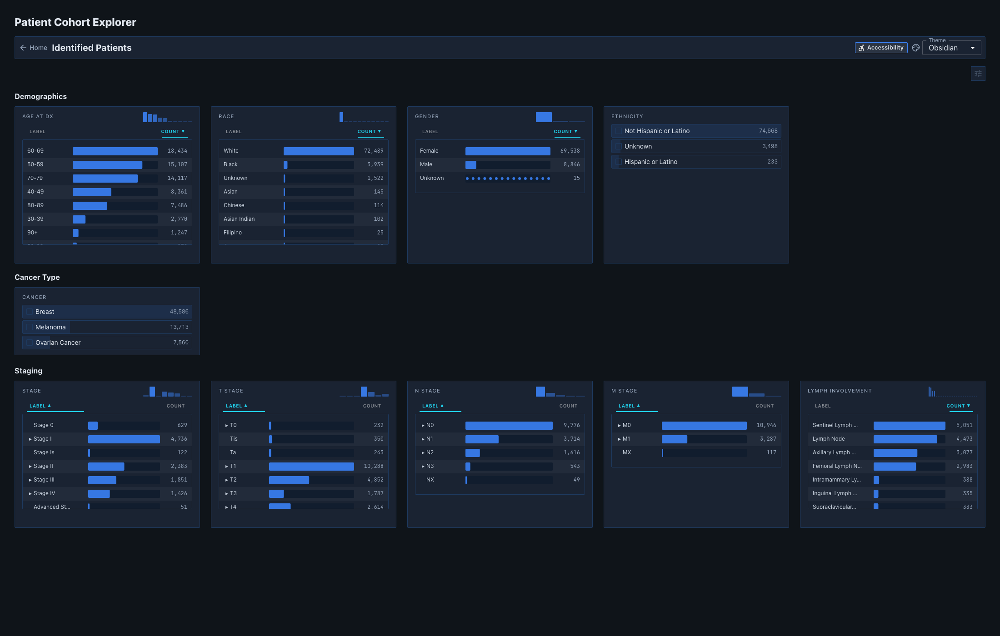
Figure 02.Patient Cohort Explorer main layout with context panel, theme selector, and filter sets.
Figure 03. Identified Patients context panel with active cohort summary region.
Theme Selector (Theme)¶
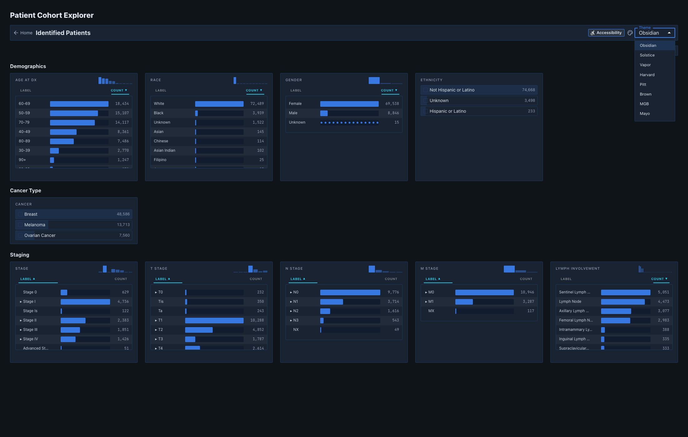
Figure 04. Theme menu expanded withObsidian, Solstice, and Vapor options.
Figure 05. Filters view rendered in Obsidian theme state.
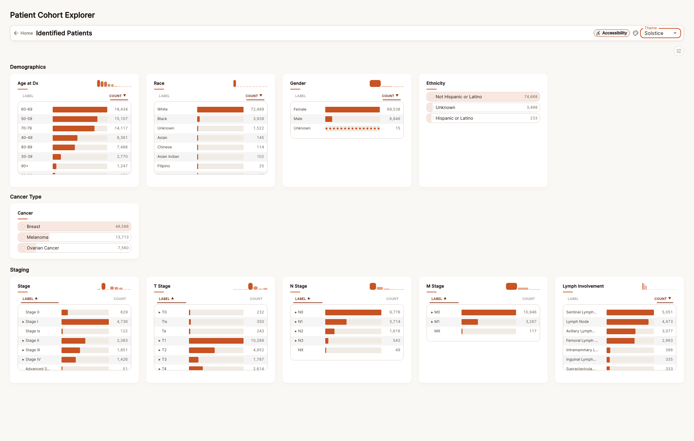
Figure 06. Filters view rendered inSolstice theme state.
 Figure 07. Filters view rendered in
Figure 07. Filters view rendered in Vapor theme state.
Filter Set: Demographics¶
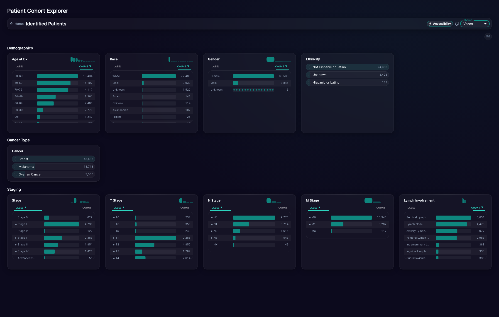
Figure 08.Demographics filter set section in the primary workflow.
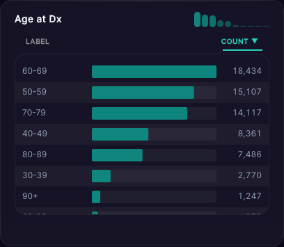
Figure 09.Age at Dx filter card capture.
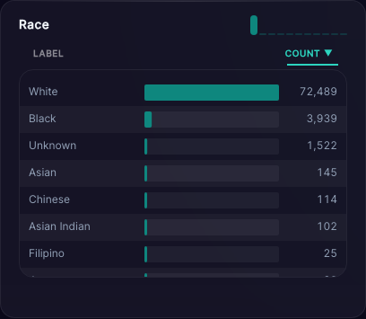
Figure 10.Race filter card capture.
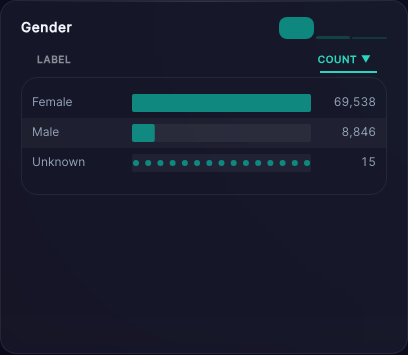
Figure 11.Gender filter card capture.
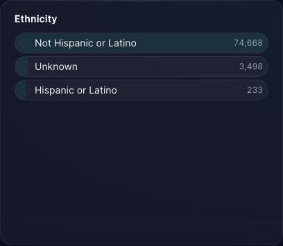
Figure 12.Ethnicity filter card capture.
Filter Set: Cancer Type¶
 Figure 13.
Figure 13. Cancer Type filter set section.
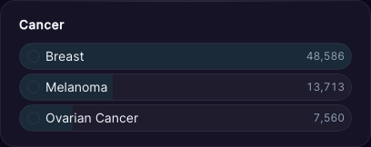
Figure 14.Cancer filter card capture.
Filter Set: Staging¶
 Figure 15.
Figure 15. Staging filter set section.
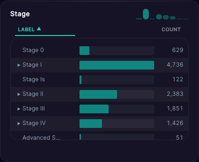
Figure 16.Stage filter card capture.
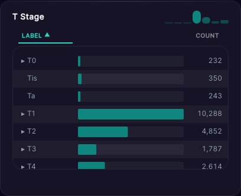
Figure 17.T Stage filter card capture.
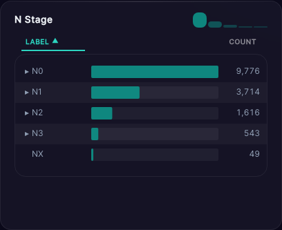
Figure 18.N Stage filter card capture.
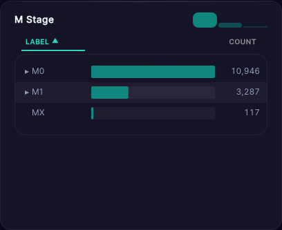
Figure 19.M Stage filter card capture.
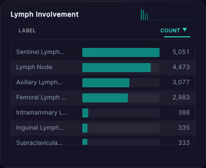
Figure 20.Lymph Involvement filter card capture.
Active Selection State¶
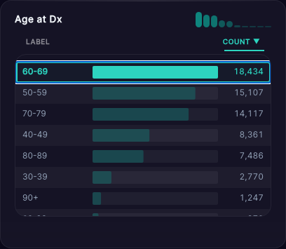
Figure 21. Filter UI after selecting at least one value to activate cohort filtering behavior.